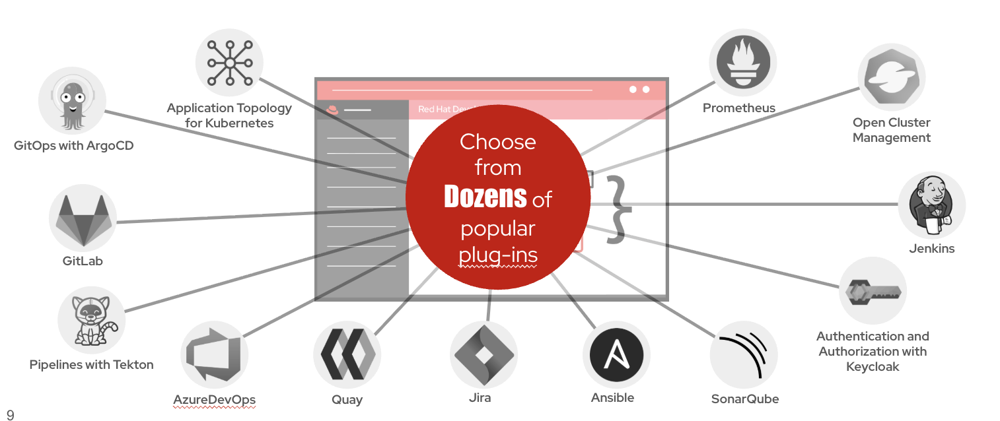

Extending Developer Hub with Plugins
So far, you’ve learned how Red Hat Developer Hub helps developers discover software through the Software Catalog, create new applications using Software Templates, and access project documentation with TechDocs.
These capabilities provide the foundation of an Internal Developer Portal. However, modern software delivery involves many additional tools that developers use throughout the application lifecycle.
Rather than requiring developers to switch between multiple consoles, Red Hat Developer Hub integrates these tools directly into the developer experience through Plugins.

The illustration above shows how Developer Hub serves as a central interface that integrates with the tools commonly found in a Software Factory. Instead of replacing these tools, Developer Hub connects to them and presents their information through a unified, self-service experience.
What are Plugins?
Plugins extend the capabilities of Red Hat Developer Hub by integrating external platforms and services into the portal.
Each plugin connects Developer Hub with a specific tool, allowing developers to view information and perform common tasks without leaving the portal.
Depending on organizational requirements, Platform Engineers can enable only the plugins that are relevant to their Software Factory.
Common Plugin Integrations
Developer Hub includes plugins for many popular software development and platform technologies.
| Plugin | Purpose |
|---|---|
GitLab or GitHub |
Access source repositories, merge requests, and project information. |
OpenShift Dev Spaces |
Launch cloud-based development workspaces directly from Developer Hub. |
Tekton Pipelines |
Monitor Continuous Integration (CI) pipeline execution and build status. |
Argo CD |
View GitOps deployment status and application synchronization. |
Quay |
Access container images stored in the organization’s image registry. |
Prometheus |
View application metrics and monitoring information. |
SonarQube |
Review code quality, security issues, and technical debt. |
Keycloak |
Provide centralized authentication and role-based access control. |
Jira |
Link software components to user stories, defects, and project work. |
Ansible |
Automate infrastructure provisioning and operational tasks. |
Open Cluster Management |
Monitor and manage applications deployed across multiple OpenShift clusters. |
A Unified Developer Experience
Without Developer Hub, developers often switch between multiple applications throughout a typical workday.
For example, a developer may need to:
-
Access source code in Git.
-
Check pipeline status in Tekton.
-
Review deployments in Argo CD.
-
View monitoring dashboards in Prometheus.
-
Search documentation.
-
Open Jira to track work items.
Although each tool serves a specific purpose, constantly switching between them interrupts developer productivity and increases cognitive load.
Developer Hub brings these capabilities together into a single interface, allowing developers to access the information they need without navigating multiple consoles.
Built for Extensibility
One of the strengths of Red Hat Developer Hub is its extensible architecture.
Because it is built on the Backstage open source framework, organizations can:
-
Enable community-supported plugins.
-
Develop custom plugins for internal tools.
-
Integrate proprietary enterprise platforms.
-
Customize the developer experience to match organizational workflows.
This flexibility allows organizations to evolve their Internal Developer Portal as their Software Factory grows.
|
Plugins do not replace the underlying tools. Git remains your source control system, Tekton continues to execute CI pipelines, Argo CD manages GitOps deployments, and Prometheus collects monitoring data. Developer Hub simply brings these capabilities together into a single developer experience. |
Key Takeaway
Plugins transform Red Hat Developer Hub from a software catalog into a unified developer portal.
By integrating source control, development environments, CI/CD, GitOps, observability, security, and project management tools, Developer Hub becomes the single entry point through which developers interact with the entire Software Factory.